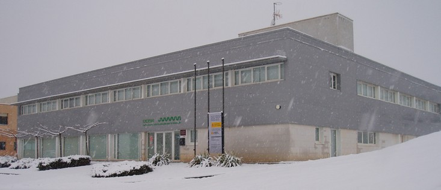

Tipos de Centros del Profesorado.
Los tipos de Centros del Profesorado vienen enumerados en el decreto citado en el apartado anterior.
Los Centros de Profesorado territoriales y sus secciones
Los Centros de Profesorado territoriales y sus secciones, los Equipos territoriales son los centros repartidos por la geografía aragonesa para llevar a cabo atención directa a los centros y sus docentes. Su ámbito de gestión está delimitado a los centros que atienden directamente. Los Centros de Profesorado los integra un equipo pedagógico formado por la persona que lo dirige, asesores que actúan en un mismo. Los Centros de Profesorado ocupando asesorías y asesorías que actúan individualmente en un ámbito territorial asignado (Equipo territorial).
En la actualidad estos son los CP territoriales y los equipos territoriales que dependen de ellos:
| Centro de Profesorado | Equipos Territoriales que dependen del CP |
|---|---|
| CP Ana Abarca De Bolea (Huesca) | Sariñena |
| CP Monzón | Fraga y Graus |
| CP Sabiñánigo | Ainsa y Jaca |
| CP Alcorisa | Alcañiz, Valderrobres y Utrillas |
| CP Ángel Sanz Briz (Teruel) | Cantavieja, Calamocha y Albarracín |
| CP Calatayud | |
| CP Ejea | |
| CP La Almunia | Cariñena y Borja-Tarazona |
| CP Juan De Lanuza (Zaragoza) | Zuera |
| CP María De Ávila (Zaragoza) | Fuentes De Ebro |
Las plazas de asesoría y dirección se cubren en comisión de servicios entre las personas que superan un proceso de concurrencia competitiva que se convoca cada año para cubrir las vacantes que resultan.
Los Centros del profesorado se regulan por la ORDEN ECD/204/2019, de 20 de febrero, por la que se regula la organización y funcionamiento de los Centros de Profesorado territoriales en la Comunidad Autónoma de Aragón. Atendiendo a estas órdenes se elaboran las convocatorias anuales de selección de asesores.
El artículo 21 de la mencionada ORDEN ECD/204/2019 recoge las competencias de los asesores.
Centros del Profesorado específicos.
Son centros de ámbito autonómico con un cometido concreto.
- Centro Aragonés de Tecnologías para la Educación. (CATEDU). Su cometido es dar soporte y asesoramiento tecnológico a la red de formación. Es el centro que organiza la formación online (Aularagón) y otros servicios de soporte al profesorado, como Vitalinux, Aramoodle, Wordpress, DOCEO, Aeducar…

- Centro de Innovación para la Formación Profesional de Aragón (CIFPA). Entre otros cometidos se vincula a la red de formación del profesorado para atender a los Centros Integrados de Formación Profesional y al profesorado de Formación Profesional de todo Aragón.
- Centro Aragonés de Lenguas Extranjeras para la Educación.(CARLEE). Su cometido es la formación en competencia y metodologías que capaciten al profesorado para poder impartir programas bilingües en francés e inglés. También se ocupan de la formación del profesorado de inglés en toda la enseñanza no universitaria de Aragón.
Video de presentación del CARLEE